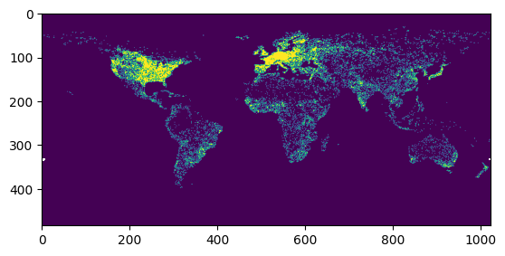
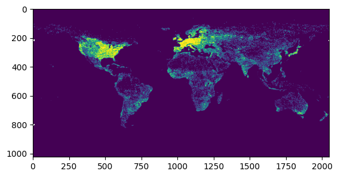
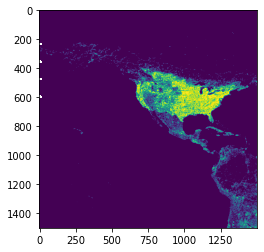
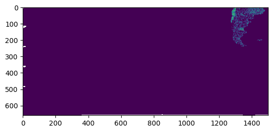
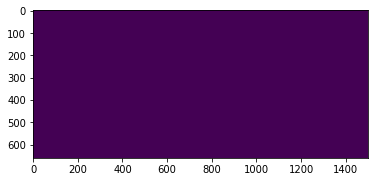
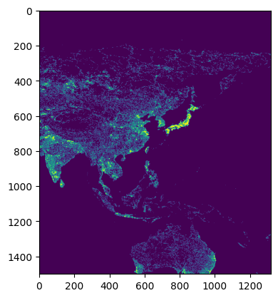
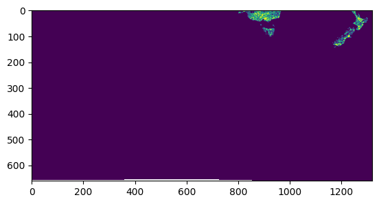
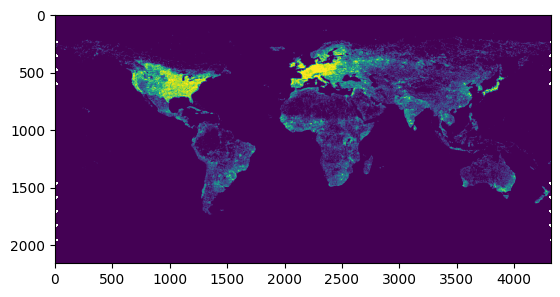

Quick start#
Cog Worker is a simple library that helps you write scalable analysis on Cloud Optimized Geotiffs (COGs).
A simple cog_worker script looks like the following.
[1]:
from rasterio.plot import show
from cog_worker import Manager
def my_analysis(worker):
arr = worker.read('roads_cog.tif')
return arr
manager = Manager(proj='wgs84', scale=0.083333)
arr, bbox = manager.preview(my_analysis)
show(arr)

[1]:
<Axes: >
Writing a cog_worker script.#
1. Define an analysis function that recieves a cog_worker.Worker as the first parameter.#
[2]:
from cog_worker import Worker, Manager
import numpy as np
# Define an analysis function to read and process COG data sources
def my_analysis(worker: Worker) -> np.ndarray:
# 1. Read a COG (reprojecting, resampling and clipping as necessary)
array: np.ndarray = worker.read('roads_cog.tif')
#print(array.data.min(), array.data.max())
# 2. Work on the array
# ...
# 3. Return (or post to blob storage etc.)
return array
2. Run your analysis in different scales and projections#
[3]:
import rasterio as rio
# Run your analysis using a cog_worker.Manager which handles chunking
manager = Manager(
proj = 'wgs84', # any pyproj string
scale = 0.083333, # in projection units (degrees or meters)
bounds = (-180, -90, 180, 90),
buffer = 128 # buffer pixels when chunking analysis
)
# preview analysis
arr, bbox = manager.preview(my_analysis, max_size=2048)
rio.plot.show(arr)
# preview analysis chunks
for bbox in manager.chunks(chunksize=1500):
print(bbox)
# execute analysis chunks sequentially
for arr, bbox in manager.chunk_execute(my_analysis, chunksize=1500):
rio.plot.show(arr)
# generate job execution parameters
for params in manager.chunk_params(chunksize=1500):
print(params)

(-180.0, -34.99950000000001, -55.00049999999999, 90.0)
(-180.0, -90.0, -55.00049999999999, -34.99950000000001)
(-55.00049999999999, -34.99950000000001, 69.99900000000002, 90.0)
(-55.00049999999999, -90.0, 69.99900000000002, -34.99950000000001)
(69.99900000000002, -34.99950000000001, 180.0, 90.0)
(69.99900000000002, -90.0, 180.0, -34.99950000000001)






{'proj': '+proj=longlat +datum=WGS84 +no_defs', 'scale': 0.083333, 'buffer': 128, 'proj_bounds': (-180.0, -34.99950000000001, -55.00049999999999, 90.0)}
{'proj': '+proj=longlat +datum=WGS84 +no_defs', 'scale': 0.083333, 'buffer': 128, 'proj_bounds': (-180.0, -90.0, -55.00049999999999, -34.99950000000001)}
{'proj': '+proj=longlat +datum=WGS84 +no_defs', 'scale': 0.083333, 'buffer': 128, 'proj_bounds': (-55.00049999999999, -34.99950000000001, 69.99900000000002, 90.0)}
{'proj': '+proj=longlat +datum=WGS84 +no_defs', 'scale': 0.083333, 'buffer': 128, 'proj_bounds': (-55.00049999999999, -90.0, 69.99900000000002, -34.99950000000001)}
{'proj': '+proj=longlat +datum=WGS84 +no_defs', 'scale': 0.083333, 'buffer': 128, 'proj_bounds': (69.99900000000002, -34.99950000000001, 180.0, 90.0)}
{'proj': '+proj=longlat +datum=WGS84 +no_defs', 'scale': 0.083333, 'buffer': 128, 'proj_bounds': (69.99900000000002, -90.0, 180.0, -34.99950000000001)}
3. Write scale-dependent functions#
[4]:
import scipy
from cog_worker import Worker
import numpy as np
def focal_mean(
worker: Worker,
kernel_radius: float = 1000 # radius in projection units (meters)
) -> np.ndarray:
array: np.ndarray = worker.read('roads_cog.tif')
# Access the pixel size at worker.scale
kernel_size = kernel_radius * 2 / worker.scale
array = scipy.ndimage.uniform_filter(array, kernel_size)
return array
4. Chunk your analysis and run it in a dask cluster#
[5]:
from cog_worker.distributed import DaskManager
from dask.distributed import LocalCluster, Client
# Set up a Manager with that connects to a Dask cluster
with LocalCluster() as cluster, Client(cluster) as client:
distributed_manager = DaskManager(
client,
proj = 'wgs84',
scale = 0.083333,
bounds = (-180, -90, 180, 90),
buffer = 128
)
# Execute in worker pool and save chunks to disk as they complete.
distributed_manager.chunk_save('output.tif', my_analysis, chunksize=2048)
with rio.open('output.tif') as src:
arr = src.read(masked=True)
show(arr)
